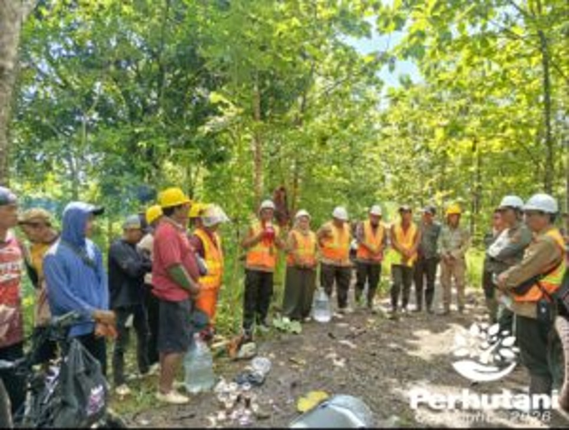

KUNINGAN, PERHUTANI (27/01/2026) | Perum Perhutani KPH Kuningan melaksanakan kegiatan Cutting Test Tahun 2026 pada Selasa, 6 Januari 2026, bertempat di Resort Pemangku Hutan (RPH) Sukasari dengan luas areal 10,00 hektare, wilayah kerja Bagian Kesatuan Pemangku Hutan (BKPH) Luragung. Sebagai upaya awal dalam mengoptimalkan pencapaian target produksi kayu. Kegiatan tersebut dihadiri oleh Administratur KPH Kuningan, Wakil Administratur, Kasi Produksi dan Ekowisata,Kepala Seksi (KSS) Produksi, Asisten Perutani (Asper) Penguji, Asper Badan Kesatuan Pemangkuan Hutan (BKPH) Luragung, Kepala Resort Pemangkuan Hutan (KRPH) Sukasari, Mandor Sukasari, Mitra Regu Kerja Tebangan (RKT), serta jajaran terkait lainnya.
Dalam arahannya, Administratur KPH Kuningan Siti Kasanah menyampaikan bahwa pelaksanaan Cutting Test merupakan tolok ukur pencapaian target produksi pada petak yang diuji agar dapat dimaksimalkan secara optimal. Melalui kegiatan ini, diharapkan target produksi KPH Kuningan dapat terealisasi hingga 105 persen dari target Rencana Tebangan Tahunan (RTT) yang telah ditetapkan.
Lebih lanjut, Administratur menegaskan agar seluruh pelaksanaan pekerjaan tetap mengacu pada prosedur kerja yang berlaku, tidak mengabaikan panca usaha tebangan, serta mampu memaksimalkan Backing Policy guna memperoleh hasil produksi yang optimal dan berkualitas.
Selain itu, Administratur KPH Kuningan juga mengingatkan pentingnya penerapan Keselamatan dan Kesehatan Kerja (K3) di area tebangan. Seluruh petugas lapangan diwajibkan menggunakan Alat Pelindung Diri (APD) secara lengkap demi terciptanya keamanan, keselamatan, dan kenyamanan dalam bekerja.
Dengan dilaksanakannya Cutting Test ini, diharapkan pelaksanaan tebangan tahun 2026 dapat berjalan dengan baik, aman, dan sesuai dengan ketentuan, serta memberikan kontribusi maksimal terhadap pencapaian target produksi Perum Perhutani KPH Kuningan.
Editor: WK
Copyright © 2026 Warta Nusantara Barat